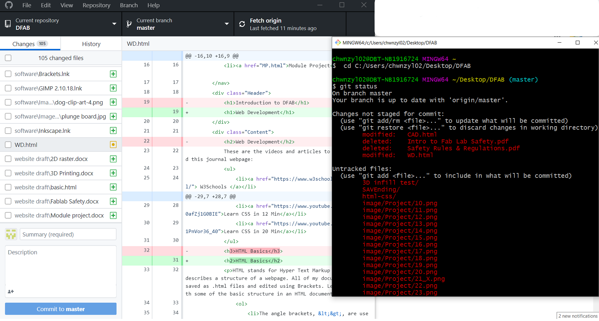

- W3Schools
- Web Design 101
- Learn HTML in 12 Min
- Learn More HTML in 12 Min
- Learn CSS in 12 Min
- Learn CSS in 20 Min
HTML Basics
HTML stands for Hyper Text Markup Language. It describes a structure of a webpage. All of my documentation is saved as .html files and edited using Brackets. Let's begin with some of the basic structure in an HTML document.
- The angle brackets, <>, are used to enclose a code. Anything that goes in between the angle brackets codes for a property or an expression. Together, these 2 form a tag.
- At the start of an HTML document,
<!DOCTYPE html'>declares that the document is a HTML, for the browser to read and run the page. - An HTML element tells a browser how to display a content. It is defined by a start tag, some content, and an end tag (w3schools).
E.g. <tagname>---Content---</tagname> - Attributes provide additional information about the element, such as
href,src,width, andstyle. Some examples are displayed in the image below. - 'class' attribute marks an element for styling and can be used repeatedly in a document., whereas 'id' attribute is unique and can only be used within the page once.
- The image below shows more HTML elements and properties. (Click to enlarge)

CSS Basics
CSS stands for Cascading Style Sheets. It describes how HTML elements should be displayed, and can be used repeatedly in multiple webpages. Here is an example, taken from my website stylesheet.

What are the basics of CSS? Let's take a look.
- Syntax: A CSS rule consists of a selector, a pair of curly brackets, property and value declaration separated by a colon, and a semicolon to separate multiple declarations.
⇒p {color:blue; text-align:center} - Simple Selectors: If an element is selected, the name can be written on its own. If a class is selected, a period '.' will be written before the class name. If an ID is selected, a hash '#' will be written instead.
⇒body{,.Header{,#slide1{ - Combinator Selectors: Different selectors are combined together to make the selection more specific. To specify what an element must have, selectors are placed side by side without spacing.
⇒div.Content{
To use multiple selectors to specify an ancestor of an element, a space is added.
⇒nav a{
To give the same properties to multiple selectors, a comma is used.
⇒ul, .names, #mywork{ - How to input CSS: It can be added inline with HTML elements. ⇒
<p style=color:"red">
It can be added as a element in the head if an HTML document. ⇒<style> h1{padding:0} </style>
However, the 2 methods above can only be used once in an element or one HTML page. It will be very tedious to rewrite the same styles many times. Furthermore, HTML is meant to contain the structure of a webpage and not styling the content. Hence it is recommended to store as an external CSS file and attach it in an HTML document. ⇒<link rel="stylesheet" href="style.css">
Version Control
Version control is a system that records changes to a file or set of files over time so that specific versions can be recalled later on. This is especially important for web designers to keep track of each changes made, as well as preserving older versions which may be needed along the way. Version control allows me to revert selected files back to a previous state, revert the entire project back to a previous state, compare changes over time, see who last modified something that might be causing a problem (for multiple collaborators), and more. In this way, recovery is made easy with version control even if I messed up or lose my files.
These websites and videos aid in creating my Git repository, which essentially lead to publishing my website.
- What is Git
- Learn Git in 15 min
- Git Guide Book
- Creating a repository on GitHub
- Learn GitHub in 20 Minutes
Getting started with Git
After I installed Git on my Desktop, I launched Git Bash and created my username using $ git config --global user.name. To create a repository using the folder "DFAB" I have in my desktop, I first find the address of the folder and paste it in Git, then initialise a repository in that directory:
$ cd C:/Users/chwnzyl02/Desktop/DFAB
$ git init
I can check the status of my files using $ git status. All the files within my folder were listed as 'Untracked files'. To add the files that I need into my repository, I used $ git add <file> (after which they will be listed under "Changes to be committed"), then I add these files into my master branch using $ git commit. I will have to write a message for every commit I made, using the -m flag. Commit messages will come in handy when I need to recall any version in the future. Finally, I will publish the commits onto my website with $ git push origin master.
As the time went by, I will make changes to some files, create new files, or remove some in the folder, I will have to update my master branch, then commit again. $ git add <file> adds the new/modified file into the staging area, while $ git rm <file> removes the file from the staging area. To view commit history, enter $ git log. By default, with no arguments, 'git log' lists the commits made in that repository in reverse chronological order; i.e. the most recent commits show up first. It is a good habit to commit changes frequently, instead of making changes to many files at once then commit, as it will be a headache to redo from the last commit if something goes wrong.
There are many more things about Git and these sums up how I created a repository and continue my documentation. The links above contains more information, should you wish to explore more about Git.
Transiting to Github Desktop
Initially I didn't want to use Github Desktop fearing that it will take up a lot of storage. However, I realised using Github Desktop is more convenient as I can just commit changes to master and push origin within a few clicks. I can also monitor all the changes at one glance, compared to Git.
Comparision between Git and Github Desktop:
